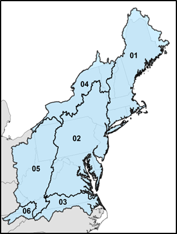

Section 7 Download
7.1 Stream Temperature Model Predictions Dataset
The stream temperature model predictions can be downloaded as a static CSV file from the following link.
This file contains the following columns:
| CSV Column | Description |
|---|---|
| featureid | Catchment ID |
| max_max_temp | Maximum Temp (degC) |
| max_max_temp_air2 | Maximum Temp (degC) w/ Air Temp +2 degC |
| max_max_temp_air4 | Maximum Temp (degC) w/ Air Temp +4 degC |
| max_max_temp_air6 | Maximum Temp (degC) w/ Air Temp +6 degC |
| max_temp_30d | Max 30-day Mean Temp (degC) |
| max_temp_30d_air2 | Max 30-day Mean Temp (degC) w/ Air Temp +2 degC |
| max_temp_30d_air4 | Max 30-day Mean Temp (degC) w/ Air Temp +4 degC |
| max_temp_30d_air6 | Max 30-day Mean Temp (degC) w/ Air Temp +6 degC |
| mean_aug_temp | Mean August Temp (degC) |
| mean_aug_temp_air2 | Mean August Temp (degC) w/ Air Temp +2 degC |
| mean_aug_temp_air4 | Mean August Temp (degC) w/ Air Temp +4 degC |
| mean_aug_temp_air6 | Mean August Temp (degC) w/ Air Temp +6 degC |
| mean_jul_temp | Mean July Temp (degC) |
| mean_jul_temp_air2 | Mean July Temp (degC) w/ Air Temp +2 degC |
| mean_jul_temp_air4 | Mean July Temp (degC) w/ Air Temp +4 degC |
| mean_jul_temp_air6 | Mean July Temp (degC) w/ Air Temp +6 degC |
| mean_jun_temp | Mean June Temp (degC) |
| mean_jun_temp_air2 | Mean June Temp (degC) w/ Air Temp +2 degC |
| mean_jun_temp_air4 | Mean June Temp (degC) w/ Air Temp +4 degC |
| mean_jun_temp_air6 | Mean June Temp (degC) w/ Air Temp +6 degC |
| mean_max_temp | Mean Annual Max Temp (degC) |
| mean_max_temp_air2 | Mean Annual Max Temp (degC) w/ Air Temp +2 degC |
| mean_max_temp_air4 | Mean Annual Max Temp (degC) w/ Air Temp +4 degC |
| mean_max_temp_air6 | Mean Annual Max Temp (degC) w/ Air Temp +6 degC |
| mean_summer_temp | Mean Summer Temp (degC) |
| mean_summer_temp_air2 | Mean Summer Temp (degC) w/ Air Temp +2 degC |
| mean_summer_temp_air4 | Mean Summer Temp (degC) w/ Air Temp +4 degC |
| mean_summer_temp_air6 | Mean Summer Temp (degC) w/ Air Temp +6 degC |
| n_day_temp_gt_18 | Mean # Days per Year Temp > 18 C |
| n_day_temp_gt_18_air2 | Mean # Days per Year Temp > 18 C w/ Air Temp +2 degC |
| n_day_temp_gt_18_air4 | Mean # Days per Year Temp > 18 C w/ Air Temp +4 degC |
| n_day_temp_gt_18_air6 | Mean # Days per Year Temp > 18 C w/ Air Temp +6 degC |
| n_day_temp_gt_20 | Mean # Days per Year Temp > 20 C |
| n_day_temp_gt_20_air2 | Mean # Days per Year Temp > 20 C w/ Air Temp +2 degC |
| n_day_temp_gt_20_air4 | Mean # Days per Year Temp > 20 C w/ Air Temp +4 degC |
| n_day_temp_gt_20_air6 | Mean # Days per Year Temp > 20 C w/ Air Temp +6 degC |
| n_day_temp_gt_22 | Mean # Days per Year Temp > 22 C |
| n_day_temp_gt_22_air2 | Mean # Days per Year Temp > 22 C w/ Air Temp +2 degC |
| n_day_temp_gt_22_air4 | Mean # Days per Year Temp > 22 C w/ Air Temp +4 degC |
| n_day_temp_gt_22_air6 | Mean # Days per Year Temp > 22 C w/ Air Temp +6 degC |
| n_day_temp_gte_24_9 | Mean # Days per Year Temp >= 24.9 C |
| n_day_temp_gte_24_9_air2 | Mean # Days per Year Temp >= 24.9 C w/ Air Temp +2 degC |
| n_day_temp_gte_24_9_air4 | Mean # Days per Year Temp >= 24.9 C w/ Air Temp +4 degC |
| n_day_temp_gte_24_9_air6 | Mean # Days per Year Temp >= 24.9 C w/ Air Temp +6 degC |
| n_day_temp_gte_27 | Mean # Days per Year Temp >= 27 C |
| n_day_temp_gte_27_air2 | Mean # Days per Year Temp >= 27 C w/ Air Temp +2 degC |
| n_day_temp_gte_27_air4 | Mean # Days per Year Temp >= 27 C w/ Air Temp +4 degC |
| n_day_temp_gte_27_air6 | Mean # Days per Year Temp >= 27 C w/ Air Temp +6 degC |
| resist | Resistivity |
| resist_air2 | Resistivity w/ Air Temp +2 degC |
| resist_air4 | Resistivity w/ Air Temp +4 degC |
| resist_air6 | Resistivity w/ Air Temp +6 degC |
7.2 Catchment Delineation Shapefiles
The EcoSHEDS Northeast Catchment Delineation (NECD) is available as a series of shapefiles, pre-staged by 2-digit hydrologic unit codes (HUCs). The model predictions and covariates CSV files can be joined to these shapefiles using the mutual featureid column.

- Region 01 Catchments (zipped shp)
- Region 02 Catchments (zipped shp)
- Region 03 Catchments (zipped shp)
- Region 04 Catchments (zipped shp)
- Region 05 Catchments (zipped shp)
- Region 06 Catchments (zipped shp)
The documentation for the catchment delineation is also available:
7.3 Catchment Covariates Dataset
The SHEDS catchment covariates are available as a series of CSV files, pre-staged by 2-digit hydrologic unit codes (HUCs). The covariates contain the catchment characteristics that are used as input variables to the stream temperature model.
- Region 01 Covariates (zipped csv)
- Region 02 Covariates (zipped csv)
- Region 03 Covariates (zipped csv)
- Region 04 Covariates (zipped csv)
- Region 05 Covariates (zipped csv)
- Region 06 Covariates (zipped csv)
The documentation for catchment covariates is also available: